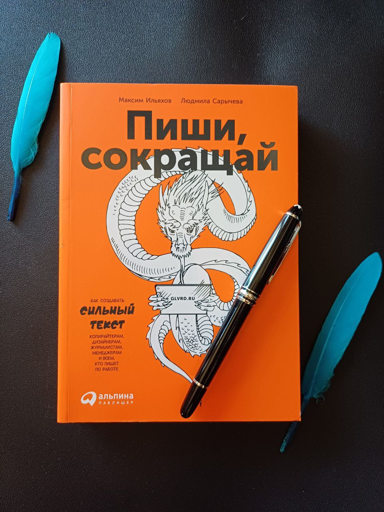
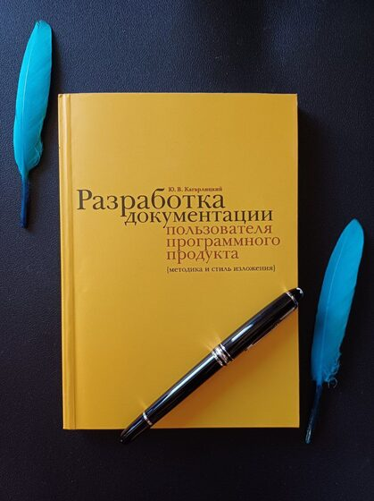
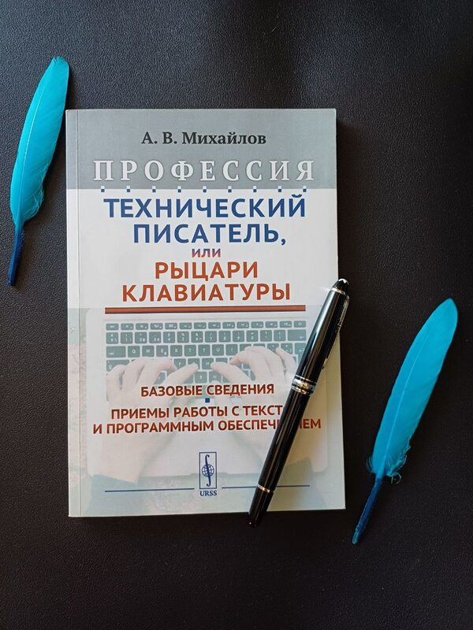
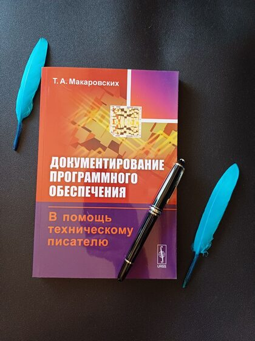
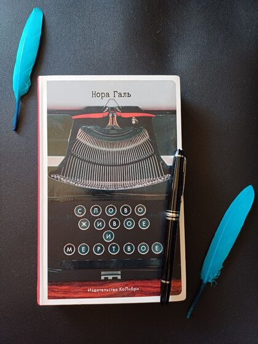
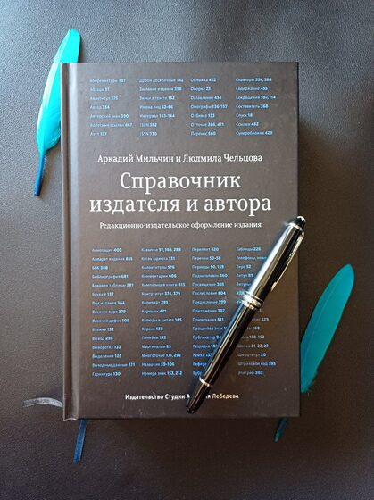

Список книг для технических писателей
01
Техписательство
6 книг-
Разработка документации пользователя программного продуктаКагарлицкий Ю.
-
Документирование программного обеспечения. В помощь техническому писателюМакаровских (Панюкова) Т.
-
Профессия Технический писатель, или Рыцари клавиатурыМихайлов А.
-
Modern Technical WritingEtter Andrew
-
The Product is Docs: Writing technical documentation in a product development groupGales Christopher, Splunk Documentation Team
-
Creating Documentation in an Agile Scrum EnvironmentNispel Marni
02
Работа с текстом
20 книг-
Слово живое и мертвоеГаль Н.
-
Как писать хорошоЗинсер Уильям
-
Пиши, сокращайИльяхов М., Сарычева Л.
-
Ясно, понятно: Как доносить мысли и убеждать людей с помощью словИльяхов М.
-
Уступите место драме. Как писать интересно даже на скучные темы. Копирайтерам, журналистам, редакторамСарычева Л.
-
Как писать книгиКинг Стивен
-
Право писатьКэмерон Джулия
-
Воспитание словомМаршак С.Я.
-
Справочник издателя и автораМильчин А., Чельцова Л.
-
В лаборатории редактораЧуковская Л.
-
Живой как жизнь. О русском языкеЧуковский К.
-
Все правила русского языка в схемах и таблицахАлексеев Ф.
-
Универсальный справочник по русскому языкуРозенталь Д.Э.
-
Слитно? Раздельно? Через дефис? Книжное делоБукчина Б.З.
-
Причеши меня. Твой текстЗвонцова Е.
-
Я, редакторКононов Н.
-
Как писать нон-фикшнЭнн Джензер
-
Спасите котика!Блейк Снайдер
-
Как писать хорошоУильям Зинсер
-
Принцип пирамиды МинтоБарбара Минто
03
Руководства по стилю
2 книги-
Руководство по стилю от Google
-
Чикагское руководство по стилюИздательство Чикагского университета
04
Docs as Code
2 книги-
LATEX. Руководство для начинающих. Создание визуально привлекательных текстов, статей и книгШтефан Коттвиц
-
Docs Like CodeGentle Anne
05
Управление знаниями
4 книги-
Компания - создатель знанияИкуджиро Нонака, Хиротака Такеучи
-
Инженерия знаний. Модели и методыКудрявцев Д., Гаврилова Т. А., Муромцев Д. И.
-
Working knowledge: how organizations manage what they knowПрусак Лоренс, Дэвенпорт Томас Х.
-
Нормативное обеспечение в сфере информационных технологий и системТ.Ф. Череватова
06
Типографика
5 книг-
Философия дизайна Германа ЦапфаГ. Цапф
-
Образцы шрифтовЯн Чихольд
-
Новая типографикаЯн Чихольд
-
Облик книгиЯн Чихольд
-
Шрифтовое мышлениеЭллен Лаптон
07
API
1 книга-
Проектирование веб-APIАрно Лоре
08
Повышение soft skills
2 книги-
Новые правила деловой перепискиИльяхов М., Сарычева Л.
-
Джедайские техники конструктивного общенияОрлов А.
09
UX/UI
7 книг-
Пользовательский интерфейсБирман И.
-
Интерфейс: новые направления в проектировании компьютерных системРаскин Джефф
-
100 главных принципов дизайнаУэйншенк Сьюзан
-
Законы UX-дизайна. Понимание психологии пользователя - ключ к успехуЯблонски Джон
-
Здесь должен быть текст. Профессиональный UX-райтингМайкл Дж. Меттс, Энди Уэлфл
-
Законы UX-дизайнаДжон Яблонски
-
Дизайнер интерфейсовИ. Сидоренко
10
UML
2 книги-
UML 2.0. Объектно-ориентированное моделирование и разработкаРамбо Джеймс, Блаха М.
-
Введение в UMLФаулер Мартин
11
DITA
2 книги-
DITA Best Practices: A Roadmap for Writing, Editing, and Architecting in DITABellamy Laura
-
DITA Configuration and Specialization Tutorials
12
Разное
9 книг-
ИТ-стандартыН.Ю. Емельянова, В.А. Емельянов
-
Справочник IT-терминовМ.В. Новосадова
-
Автоматизация рутины в Excel VBAВ.Н. Шитов
-
Сертификация информационных системО.Н. Лагоша
-
Компьютерные сетиЭ. Танненбаум, Н. Фимстер, Д. Уэзеролл
-
Архитектура компьютераЭ. Танненбаум, Т. Остин
-
Современные операционные системы Agile. Практическое руководствоЭ. Танненбаум, Х. Бос
-
Руководство PMBoK. Шестое издание
-
BABoK v3 DAMA-DMBoK. Второе издание
Книги для технических писателей
Подборка из наших домашних библиотек

Пиши, сокращай
Ильяхов Максим, Сарычева Людмила
Автор фото: Анна Костягина

Разработка документации пользователя программного продукта
Кагарлицкий Юрий
Автор фото: Анна Костягина

Профессия Технический писатель, или Рыцари клавиатуры
Михайлов Александр
Автор фото: Анна Костягина

Документирование программного обеспечения. В помощь техническому писателю
Макаровских (Панюкова) Татьяна
Автор фото: Анна Костягина

Слово живое и мертвое
Нора Галь
Автор фото: Анна Костягина

Справочник издателя и автора
Аркадий Мильчин, Людмила Чельцова
Автор фото: Анна Костягина